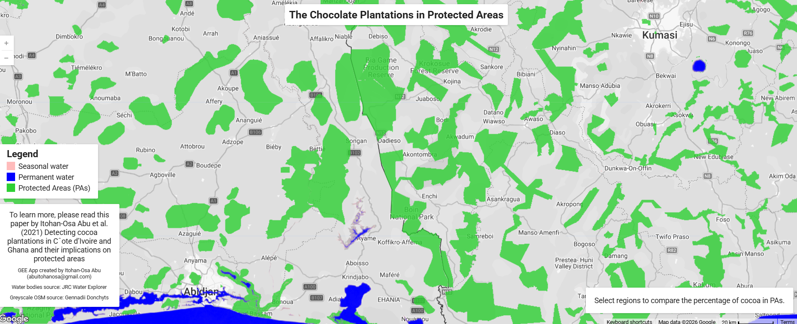
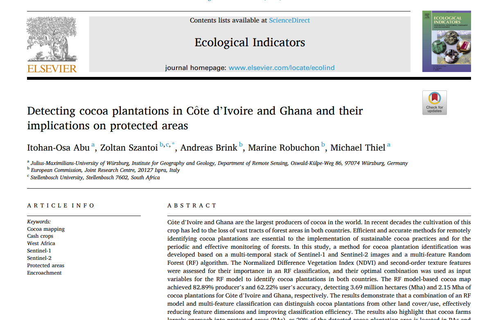

Satellite Monitoring
Uses Earth observation data to examine cocoa-related land-cover patterns across the study area.
An interactive geospatial project examining cocoa plantation expansion and its implications for protected landscapes, forest conservation, and environmental decision-making.
Cocoa production supports livelihoods and regional economies, but agricultural expansion can place pressure on forests and protected areas. This project uses satellite observations and geospatial analysis to help users explore cocoa-growing landscapes and understand their relationship with environmentally protected regions.
Uses Earth observation data to examine cocoa-related land-cover patterns across the study area.
Visualizes the spatial relationship between cocoa plantations and protected or conservation-sensitive landscapes.
Allows users to explore locations, map layers, and environmental patterns through a public web application.
Provides accessible geospatial information for conservation planning, environmental monitoring, and sustainable agricultural development.


Open the interactive application to explore the project layers and examine cocoa plantation patterns in relation to protected areas.
Launch Application